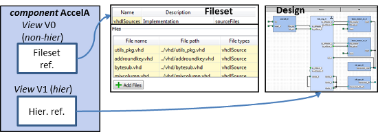

Views editor provides a summary of the views of the component. The editor can be used to add and remove views. View specifies a representation level of a component, e.g. there might be different views for simulation and synthesis. Component must have at least 1 view. It can also have many views and one of them activated when component is instantiated in a design.
Name and description columns are editable here but view type is not. It defines whether the view is hierarchical or not, and it is set on the view's setting page. Hierarchical view contains a reference to a design or design configuration which instantiates sub-components and connects them together. Non-hierarchical views refers to 1 or multiple file sets within the containing component.
The editor a contains a context menu that contains following options:
Views that are currently in an invalid state are displayed in red.
EXAMPLE. Component can have many views, for example one that
refers to fileset(s) and the other that refers to a design.
